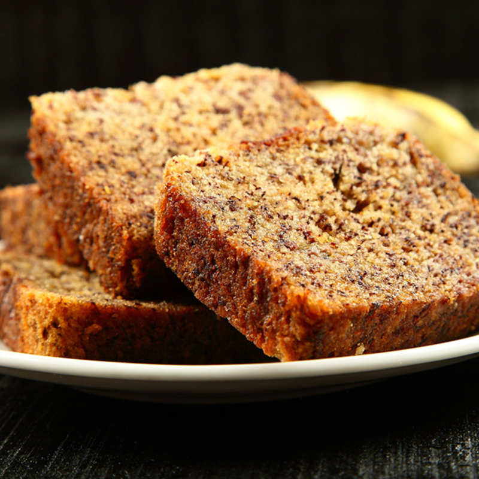

Banana Cake

A banana cake is a cake prepared using banana as a primary ingredient and typical
cake ingredients. It can be prepared in various manners, including as a layer
cake, as muffins and as cupcakes. Steamed banana cake is found in Chinese,
Indonesian and Vietnamese cuisine.
Ingredients:
- 3-4 bananas
- 1 cup flour
- 1 tsp. baking powder
- 1 tsp. baking soda
- 3/4 cup sugar
- 1/4 milk
- 2 eggs
- 1/4 cup butter (melted)
Directions:
- Preheat the oven.
- Mash the bananas.
- Add the milk, eggs, and butter in the bananas. Mix.
- Sift the flour, baking powder, and baking soda in a different bowl.
- Add the dry ingredients gradually to the banana batter while mixing.
- Bake for around 30 minutes at 180 °C.